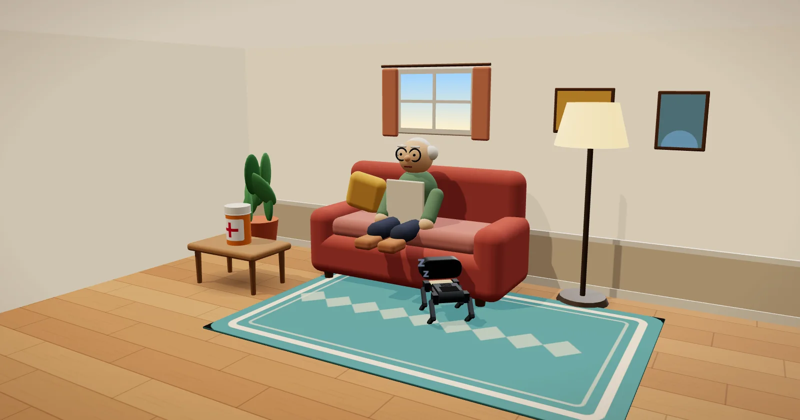

로보독을 깨우는 중…
이 기기에서는 3D 영상을 켤 수 없어요.
아래 버튼으로 바로 시작할 수 있어요. 기존 소개 화면에서 2D 그림으로도 볼 수 있어요.
아래 버튼으로 바로 시작할 수 있어요. 기존 소개 화면에서 2D 그림으로도 볼 수 있어요.
로보독의 모험 · 할아버지의 약
할아버지가 약을 찾지 못해요
내가 가르친 AI로 로보독이 약통을 찾아 줘요
로봇이 없어도 시뮬레이터로 시작할 수 있어요. 우리 학교의 문제는 무엇인가요?
학생: 선생님이 알려 준 수업 코드로 슬라이드 함께 보기 →
코코아팹 협력 빅아이 로보독은 코코아팹의 제품이며, 이 교육 도구는 코코아팹과 협력해 만들었습니다. 영상은 이야기를 위한 상상이에요. 실물 로보독은 물건을 집지 못해서, 찾아가서 알려 주는 역할로 수업해요.로보독은 코코아팹 제품이에요. 영상은 상상이고, 실물 로보독은 찾아가서 알려 주는 역할이에요.